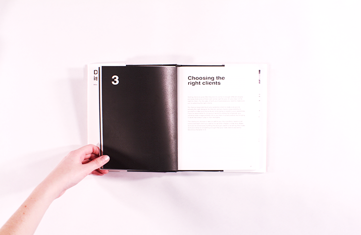
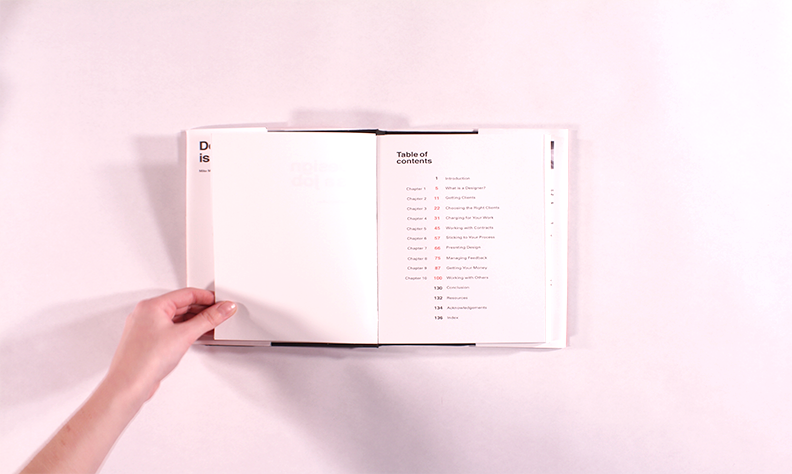
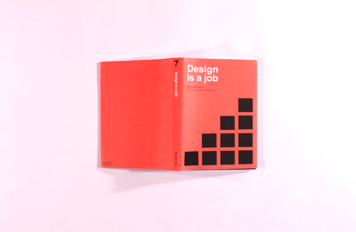
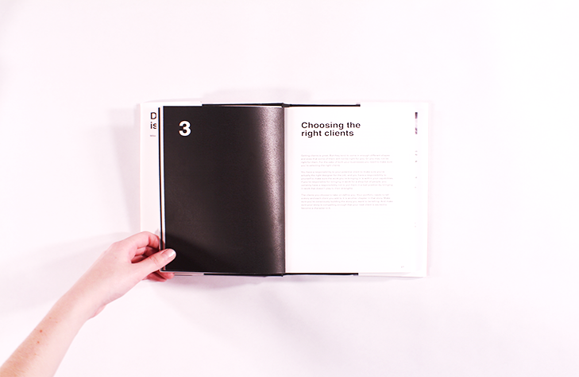
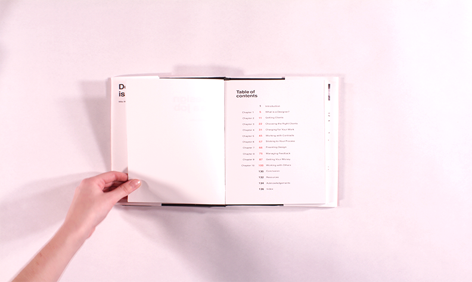
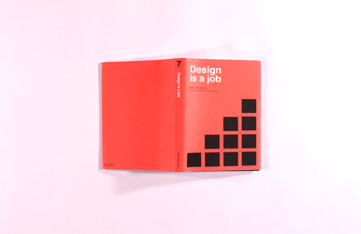

The goal of the Book Project was to redesign, perfect bind and typeset Mike Monteiro's book: "Design is a Job." For my book I decided to try and give it a "Swiss Style" while redesigning it. My concept for this assignment was the grid that all designers use in their work. For my front cover I used a laser cutter for the front cover's black grid squares. The body text is Univers and the chapter headers and title is set in Helvetica Neue.
 




